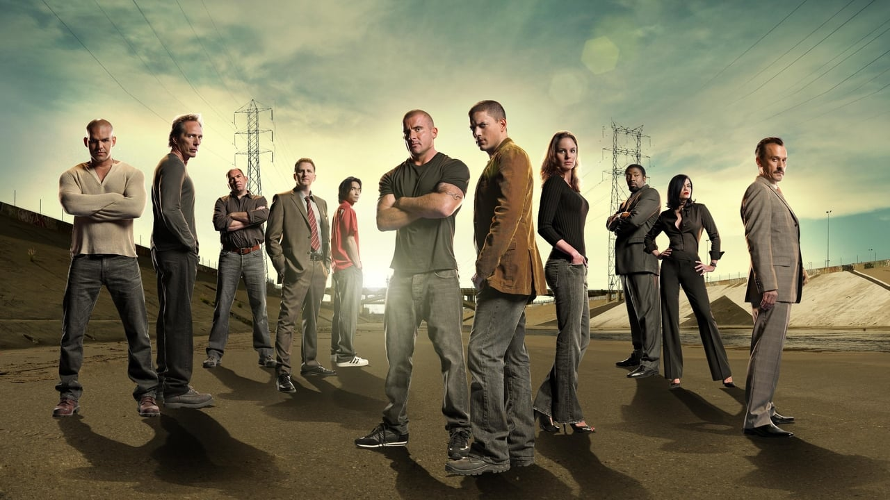

Prison Break
Prison Break es una serie de televisión dramática estadounidense creada por Paul Scheuring y estrenada el 29 de agosto de 2005.
La trama de la serie gira en torno a Michael Scofield, que en un elaborado plan
para rescatar a su hermano Lincoln Burrows, entra a "Fox River" una cárcel de máxima seguridad
cerca de Chicago, para sacar a su hermano acusado por un falso asesinato del hermano de la vicepresidenta.
Fue creada por Paul Scheuring y producida por Adelstein-Parouse Productions

Origen
El origen de Prison Break surgió de una idea (un hombre que entra en prisión a propósito para luego escapar de ella) sugerida por una amiga de Paul Scheuring, Francette Kelley. Scheuring, pensando que era una buena idea, supuso que era una misión muy complicada hacer tal serie para televisión. De todas maneras, le vino a la mente la idea de un hermano incriminado, y una conspiración. Entonces comenzó a escribir la historia de cada uno de los personajes. En 2003, Scheuring presentó la idea a FOX, pero la propuesta fue rechazada. Siguió probando suerte con otras compa&ñtilde;ías, pero ninguna lo aceptó.[11]? El proyecto fue considerado para una miniserie de 14 partes, lo cual captó la atención de grandes íconos de Hollywood, como Steven Spielberg y Bruce Willis, pero la miniserie nunca se llevó a cabo. A consecuencia de la gran popularidad de series como Lost y 24, así como la competencia de este tipo de series en DVD, la cadena FOX aceptó la idea en 2004. El episodio debut fue filmado un a&ñtilde;o después de que Scheuring escribiese el guion.?
Información
Su originalidad y sus cualidades la han hecho merecedora de nominaciones a distintos premios como los Emmy y los Globo de Oro,[1]? siendo recordada como pionera en la metodología contemporánea de las series, en cuanto a calidad y suspense generado entre los episodios (lo que hoy se conoce como Binge-watching).[2]? Esto se vio reflejado en el éxito de audiencia, en sus primeras dos temporadas.
Desde su estreno en 2005 fue emitida por la cadena Fox, pero desde 2007 la serie se había transmitido en Latinoamérica a través de FX, mientras que en Espa&ñtilde;a se estrenó el 21 de septiembre por La Sexta.
Las temporadas 1, 2 y 4 tuvieron 22 episodios cada una, mientras que la 3 solamente tuvo 13 capítulos. Debido a la Huelga de guionistas, el final de la tercera temporada fue replanteado. La huelga, que comenzó en noviembre de 2007 y terminó en febrero de 2008, mantuvo en paro la grabación del resto de la temporada de la serie.[3]?
A finales de marzo de 2008, la cadena Fox confirmó la producción de una cuarta temporada de 23 episodios que se estrenó en Estados Unidos el 1 de septiembre de 2008.[4]? Fue filmada en Los ángeles[5]? y es la &&úacute;acute;ltima temporada de la saga. En enero de 2009 se anunció que esta cuarta temporada quedaba pausada en el capítulo 16 hasta el 17 de abril de ese mismo a&ñtilde;o, cuando se reanudó para terminar con los seis episodios finales.[6]?
A principios de agosto de 2015, Fox anunció el regreso de la serie para una quinta temporada con una tanda de 9 episodios que consistirá en una secuela a&ñtilde;os después de los acontecimientos de la cuarta temporada. El estreno de la quinta temporada fue el 4 de abril de 2017 (en los Estados Unidos) y el 10 de abril de 2017 (en Espa&ñtilde;a) y fue emitido por FOX.
En enero de 2018, Fox confirmó que una sexta temporada estaba en pre-desarrollo,[7]? sin embargo, en agosto de 2019, la cadena revirtió su decisión y anunció que no iban a revivir la serie,[8]? sumado a esto, en noviembre de 2020 Wentworth Miller dijo que no está interesado en volver a interpretar a Michael Scofield.[9]?